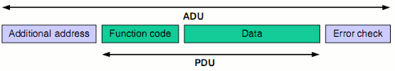

Torna alla pagina di Reti wireless
:: Reti wireless - Modbus, Introduzione IrDA ::
Appunti del 16 Marzo
[il prof ha portato in aula un PLC da far girare tra i banchi. Se non sapete cos'è e vi aspettate che ve lo spieghi, campa cavallo]
Modbus
Come facciamo a interrogare un PLC? Che protocolli software sono stati definiti sopra l'RS-485? Devo utilizzare protocolli diversi se la comunicazione fisica avviene attraverso interfacce ethernet?
A tutte queste domande dà una risposta lo standard Modbus, semplice, attuale e "concretamente molto sviluppabile". Si tratta di un protocollo software, quindi decide come sono fatte le trame di bit che passano sopra i fili di una seriale o di un RS-485, o sopra uno stack TCP/IP (via ethernet).
Chi ha standardizzato il Modbus si è posto il problema di renderlo in grado di funzionare su apparecchiature molto diverse tra loro, dai PLC ad elevata complessità ai termometri digitali, dagli interruttori ai buzzer. Una volta allacciati tutti questi dispositivi sullo stesso bus sarà dunque possibile gestirli via software con un unico protocollo.
Per semplicità stabiliamo di lavorare solo su RS-485. Tutto quello che posso fare con questo standard fisico è collegare ogni periferica con due fili in entrata e uscita, e assegnarle un numero identificativo che va da 1 a 255. Il Modbus arriva a questo punto, e si pone il problema di come interfacciarsi al dispositivo per interrogarlo. Dato che la periferica può essere un oggetto estremamente variabile (funziona in sola lettura? in sola scrittura? entrambe? lavora in digitale? in analogico? ..), quei furbastri che hanno progettato lo standard hanno deciso di semplicizzarlo al massimo stabilendo che:
- ogni oggetto ha due banchi di memoria: uno di scrittura, in cui scrive il nodo (e ci legge il bus), ed uno di lettura, da cui legge il nodo (e ci scrive il bus). Al Modbus non interessa come sono implementati, si tratta di un problema tecnologico che sarà risolto forse poi. Ovviamente i due banchi sono separati tra loro, quindi totalmente indipendenti;
- le operazioni possibili sono fondamentalmente due:
- read: "leggi da questo nodo a questo indirizzo questo numero di byte, impacchettameli e restituiscimeli". Ma cosa c'è scritto a quell'indirizzo in quei byte? Chi se ne frega!, basta che la lettura abbia buon esito! Quando implementiamo un Modbus su una soluzione dobbiamo quindi capire dove scrive i dati il dispositivo a cui ci interfacciamo (a partire da quali indirizzi?), consultando il suo data-sheet (o altrimenti non sapremmo quale byte richiedere per avere un certo tipo di informazione). Ad esempio il PLC che il professore ha portato in aula mette in ordine prima tutti gli I/O digitali, poi quelli analogici;
- write: "scrivi su questo nodo a questo indirizzo questo numero di byte e con questi valori da inserire". E' esattamente il duale dell'operazione precedente, e in pratica scrive nella memoria della periferica (quella che per lei è di lettura) delle informazioni, così che questa le mappi sull'I/O realizzando le operazioni richieste (ad esempio l'accensione di una lampadina).
Questo standard allo stesso tempo banale e funzionale è diventato uno standard assoluto: l'automazione industriale è fatta così, qualsiasi PLC di questa terra lo implementa.
Come cambia la situazione su ethernet? Semplice: le informazioni viaggeranno all'interno di una trama TCP/IP e non in un pacchetto seriale, e gli id dei nodi non saranno più numeri tra 1-255, ma IP address.
Ma è davvero tutto qui? Ha davvero solo due funzioni?
Ipse dixit:
"Potrebbe anche essere solo così.. ma giusto per scrivere un po' di manuali, perché la carta sai, le foreste sono troppe, che palle ste foreste!, bruciamole tutte. Giusto per scrivere un po' di carta han preso.."
..quelle due funzioni base e le hanno moltiplicate per 4-5 in lettura e scrittura, diversificandole a seconda che si vada a leggere singoli byte, piuttosto che bit, piuttosto che word. In sostanza però non cambia niente.
Le chiamate di read/write possono essere scritte in un qualsiasi linguaggio di programmazione sotto forma di funzioni, l'importante è che contengano tutti i parametri necessari (indirizzo del nodo, funzione da chiamare, indirizzo di memoria da cui iniziare, numero di byte da leggere/scrivere, CRC) disposti su un buffer, così che possano essere sparati su RS-485. Il nodo interrogato mi risponderà dicendomi chi è e restituendomi i byte richiesti con un CRC in fondo, o scrivendo i byte inviati dove indicato.
Un esempio di funzione di read scritta in C# è:
public int readInputRegisters{
int slaveAddr, // indirizzo dello slave da interrogare
int startRef, // indirizzo a partire dal quale si leggeranno i byte
short[] regArr // array in cui mettere i byte letti
// (il c# deduce automaticamente la dimensione dell'array)
};
Come abbiamo già detto, ricaviamo lo startRef andando a leggere il datasheet dell'oggetto da interrogare: dobbiamo sapere tutto di lui, in particolare dove scrive e quanto. Per quanto riguarda il regArr andrebbe messo un limite alla sua dimensione massima per motivi tecnologici di compatibilità con l'RS-485. E se volessi leggere più byte di quelli concessi? Ovvio, chiamerò più volte la funzione.
La funzione di scrittura è la writeMultipleRegisters, i cui parametri sono praticamente identici a quelli della sua duale di lettura. Si noti che quando si parla di registri, il Modbus parla di 16 bit.
Ribadiamo per l'ennesima volta il concetto: questo protocollo funziona per tutto, dall'interfacciamento di un PLC complesso, alla richiesta della temperatura da un termometro digitale, al funzionamento di un lampeggiante su un dispositivo. Il Modbus è l'ultimo degli standard semplici che vedremo, dato che poi le cose si faranno molto più complicate.
Ipse dixit:
"Questi qui che stavano a Bruxelles non avevano un cazzo da fare, c'era anche brutto tempo, e han detto: 'Che cazzo facciamo?' 'Definiamo un po' di standard!' E si son fatti prendere la mano, e si son detti 'Com'è fatto un lampeggiante?' Ma fatti i cazzi tuoi! Io lo faccio come mi pare a me un lampeggiante!"
Quelli del Modbus invece han detto: facciamo un protocollo semplice, io scrivo e leggo i byte, poi la loro semantica te la scegli di volta in volta quando progetti l'elettronica del tuo dispositivo. In questo modo è vero che ci si allontana da soluzioni standard, ma comunque chi userà i miei prodotti dovrà pur leggere prima i miei manuali per sapere come funzionano. E' anche questa libertà d'azione che ha fatto la fortuna del protocollo.
Le specifiche del Modbus sono liberamente scaricabili da questa pagina: http://www.modbus.org/specs.php
In particolare ecco com'è fatto un frame Modbus:

- l'additional address in viola dipende dal protocollo fisico su cui si appoggia il modbus: se è RS-485 sarà l'id del nodo, se è ethernet sarà un indirizzo IP;
- il function code mi permette di richiedere una certa funzione, quindi cosa voglio che faccia l'altro nodo;
- i dati, quindi i parametri che ci siamo raccontati prima vedendo le funzioni;
- l'error check, un CRC a 16 bit. La funzione per fare il CRC Modbus è disponibile online scritta in mille linguaggi
Tutte le funzioni possibili del Modbus sono scritte a pagina 11 della documentazione. E' importante dire che spesso chi implementa Modbus se ne frega di tutte quelle funzioni che fanno sottigliezze tra i vari tipi di lettura/scrittura a seconda del bit/byte/word da leggere. Perché? Perché non ha senso fare una chiamata su un bus, impacchettare 10byte, far lavorare un interprete dall'altra parte di 10byte, capire che funzione è stata richiesta, eseguirla, rimpacchettare il tutto, spedire la risposta, capire la risposta, eccetera solo per ottenere UN bit! Cosa si fa normalmente? Si dà l'indirizzo del nodo interessato e ci si fa spedire tutta la sua memoria. In questo modo si ottimizza il traffico di rete perché si fa una sola chiamata e si ottiene tutto (anche se molto più del necessario), tanto io conosco la semantica dei bit e so dove andare a pescare l'informazione che mi serve. Se infatti ad esempio dovessi chiedere 10 informazioni diverse posizionate su 10 bit diversi dovrei fare 10 chiamate da 1 bit con dispendio di energie e di banda sproporzionati rispetto ai miei fini; con un'unica chiamata invece trasferisco tutto, e poi mi spazzolo il buffer prendendo ciò che mi serve. In genere quindi le funzioni più usate sono la write multiple register e la read multiple register.
Fine dell'excursus sui protocolli wired.
Ipse dixit:
"Cos'è, noi studiamo reti wireless e non abbiamo ancora fatto niente di wireless, ti sembra bello? No! Ma era molto importante introdurre questa roba qui, perchè voi non la sapete, cazzo! Neanche adesso, però potete studiarla.. beh, non esageriamo, studiare, ragazzi è faticoso, poi sta per arrivare la primavera, l'ormone si alza.."
Introduzione all'IrDA
Il primo protocollo wireless che studieremo è banale: l' IrDA, ovvero InfraRed Data Association, gli infrarossi. Si tratta fondamentalmente di una linea seriale spezzata, al cui termine c'è un emettitore infrarosso e dall'altra parte c'è un ricevitore. Un trasmettitore infrarosso è in grado di tradurre un treno di bit alti e bassi in lampi di luce infrarossa di intensità diversa; il ricevitore sa fare invece l'operazione opposta, traducendo i segnali ottici in digitali.
L'IrDA introduce così il concetto di trasmissione wireless, ma è piuttosto limitato. In primo luogo i dispositivi devono vedersi: se ci mettiamo qualcosa in mezzo la trasmissione si interrompe. Il raggio di funzionamento poi è di circa 2 metri, anche se normalmente viene usato per trasmissioni che vanno dai 30 cm a massimo un metro. In secondo luogo l'indirizzamento è critico anche a brevi distanze, perché i trasmettitori emettono il segnale con un cono (un'apertura d'angolo) di appena 15°; se il ricevitore non si trova entro questo range, decisamente limitato, non riceve nulla.
Tra i suoi vantaggi vi sono il fatto di non inquinare a livello radio. Inoltre ha un costo bassissimo, sicuramente il limite inferiore per la tecnologia wireless.
Per le applicazioni più comuni (telecomandi remoti) l'IrDA trasmette a velocità molto basse, tipo quelle della seriale, ma nel tempo sono stati definiti standard sempre più veloci (ad opera dei Giapponesi) che possono arrivare a diversi Giga trasmessi per secondo.
Ipse dixit:
"..anche se di queste non se ne capisce il bisogno! E poi l'ambito di applicabilità dell'IrDA è talmente sfigato.. per me di avere un telecomando della televisione da 500 Giga che cazzo me ne faccio? devo cambiare canale! devo dirti un numero.."
L'infrarosso è nello spettro non visibile e come abbiamo detto non è sensibile all'ambiente inquinato da un punto di vista delle onde radio, mentre lo è all'inquinamento ottico: se lo spettro usato dalla trasmissione è usato da qualcos'altro che si trova nell'ambiente, il ricevitore è accecato. Il trasmettitore infatti trasmette e attende l'ACK, e se non arriva ritrasmette a frequenze più alte (aumentando l'intensità della luce emessa), continuando ad aumentarle fino a saturare l'ambiente. Esempio pratico. Molti sistemi antincendio hanno un doppio sensore per rilevare incendi, ovvero un rilevatore di fumo e un sensore infrarossi, che se entrambi segnalano pericolo fanno scattare l'allarme. Se a casa nostra abbiamo un sensore antincendio che usa la stessa frequenza del nostro telecomando, addio zapping. Ok, in ambienti domestici è quasi impossibile che succeda, ma in altri ambienti è realmente accaduto con conseguenze ben più inquietanti. Ad esempio gli infrarossi venivano usati nelle sale operatorie per i telecomandi che regolavano i movimenti del tavolo operatorio: non inquina, è perfettamente sicuro. Poi un bel giorno hanno messo i nuovi sistemi antincendio, per sfiga sulle stesse frequenze e il tavolo non si muoveva più. E se invece si fosse messo a muoversi da solo? Quante volte potremo dare la colpa ai poltergeist?
Torna alla pagina di Reti wireless